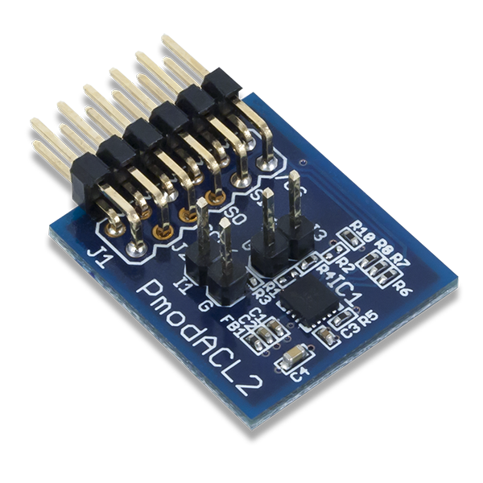

SPI Master Example
Overview
The purpose of this example is to show how to use the SPI master driver (4-wires mode).
The PmodACL2 module is used to demonstrate the use of the SPI master driver. The PmodACL2 contains an ADXL362 accelerometer.
{kind=link}
This example prints over UART the values of the 3 axis (x,y and z) of the ADXL362.
GPIOs used:
UART TX on GPIO7
SPIM CSN on GPIO8
SPIM SCK on GPIO 9
SPIM MISO on GPIO 10
SPIM MOSI on GPIO 11
The output is on GPIO7. You can connect a USB to UART device to GPIO7 and use a terminal (for example docklight) to connect on the COM port of your device.
Warning
Double check you connected the jumpers D+(07) and D-(06) on the DVK. The GPIO6 and GPIO7 pins are connected by default to the USB connector.
The output of this example on GPIO7 should look like this (ASCII):
EM9305 SPI Master demo. Starting...
DeviceID OK.
x = -2, y = -825, z = 824
x = 6, y = -829, z = 828
x = 4, y = -820, z = 827
Note
The JTAG can’t be used because the SPI master is on GPIOs 8-11.
Build
The build target of this example is: spi_master_example
cd <sdk>\build
cmake --build . --target spi_master_example
Run
To program and run the example:
cd <sdk>\tools\blengine
python blengine_cli.py --port COMYY run emsystem_prog ..\..\build\projects\spi_master_example\spi_master_example.ihex --progress
With YY = the COM port number of your DVK.
You should be able to see the messages on your terminal.